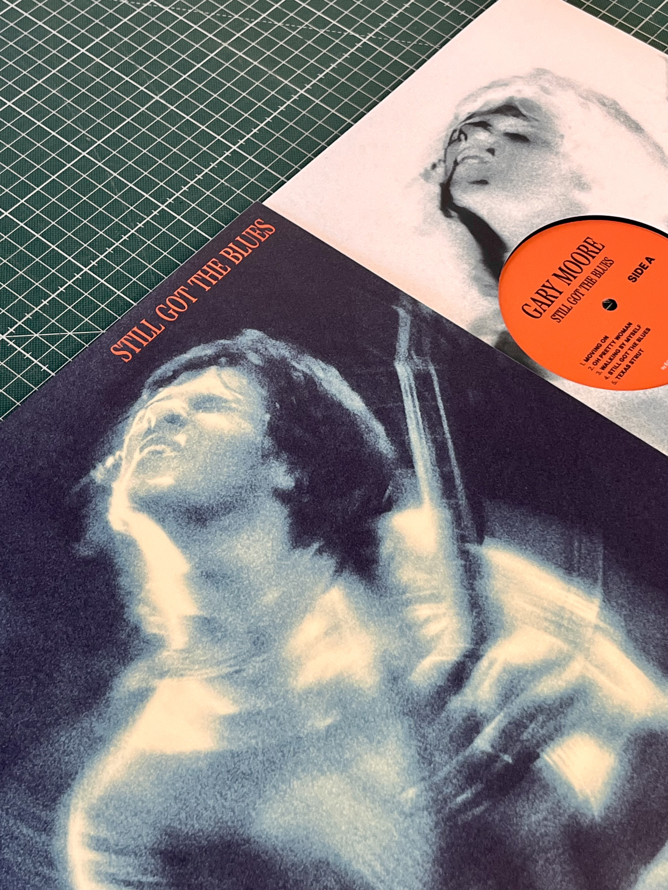
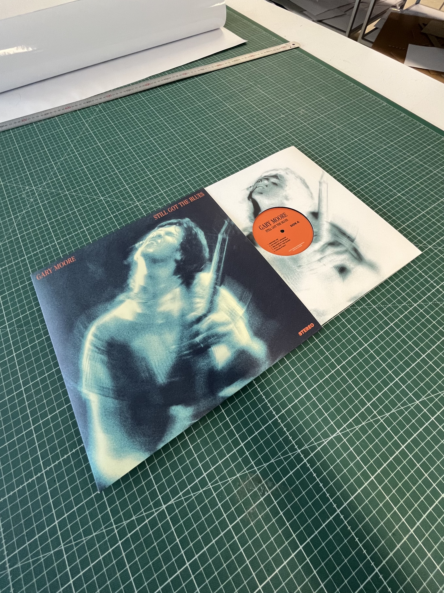
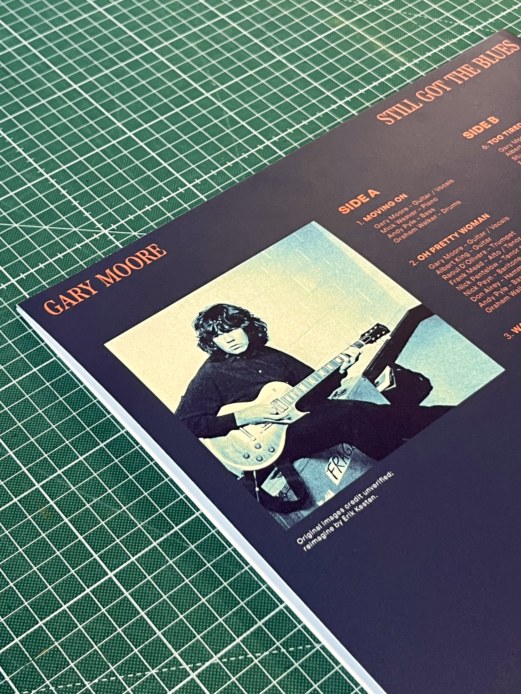

- Graphic design
- Packaging
- Post-press
A complete alternative version of Gary Moore's Still Got The Blues on vinyl. I've designed album cover, inner sleeve and center labels. Together with print and packaging design as well as cutting made by me.



